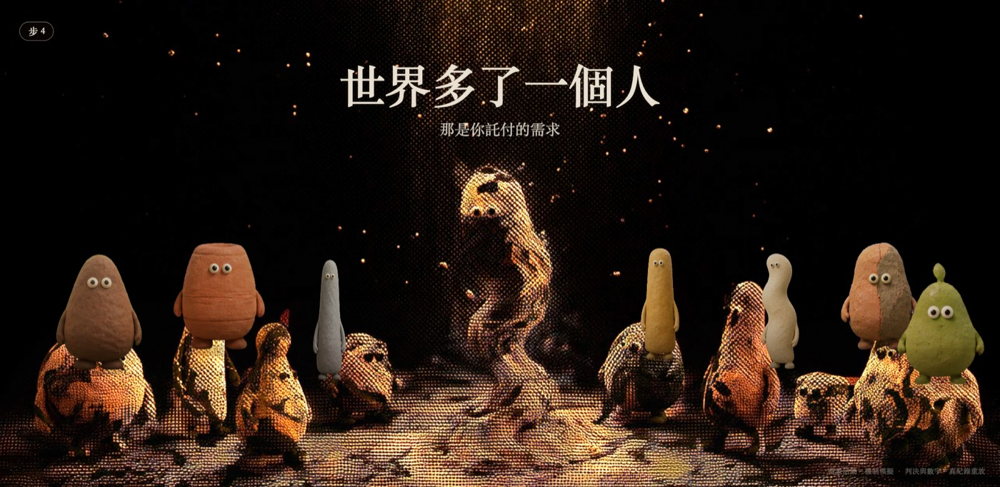
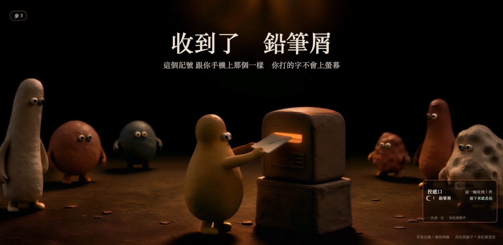
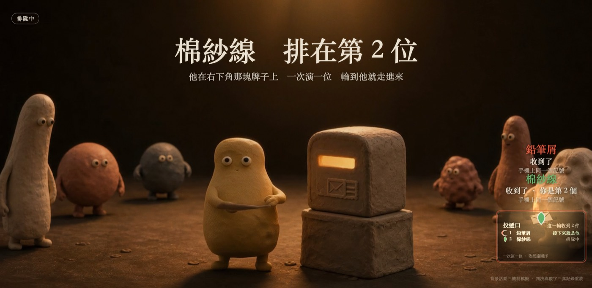
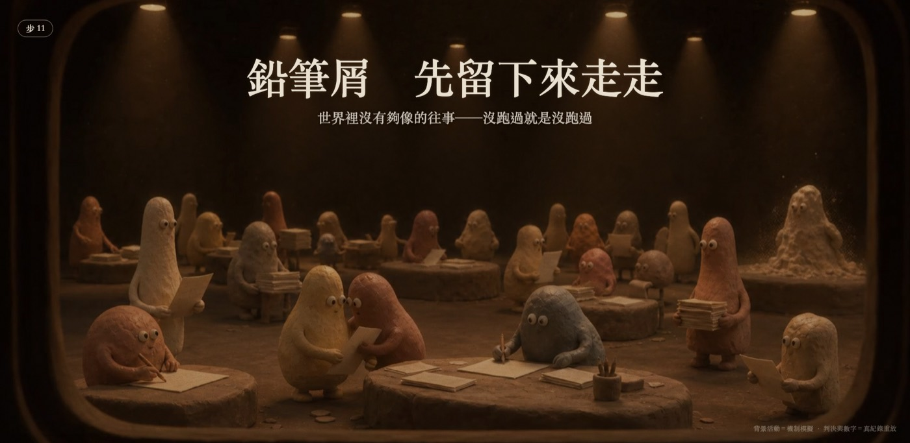
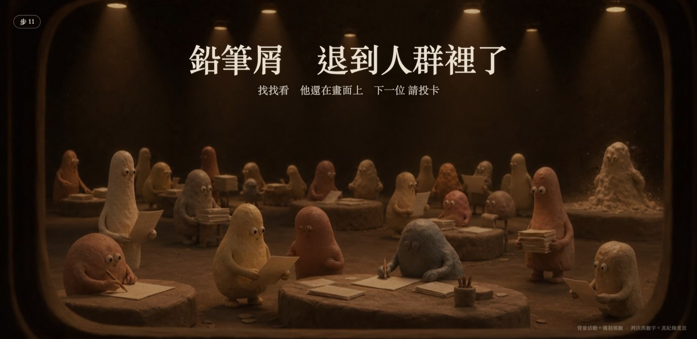
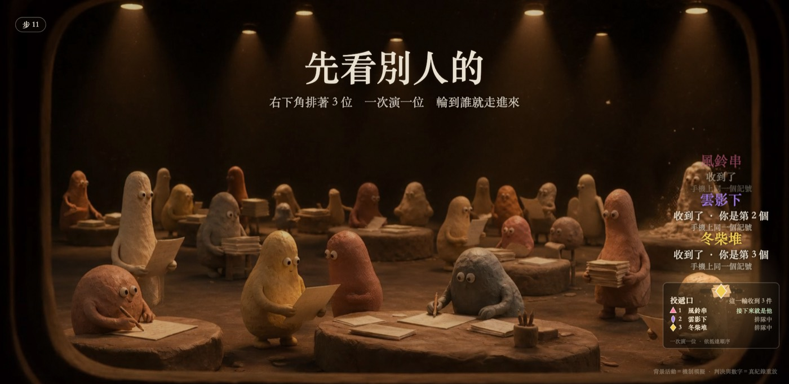
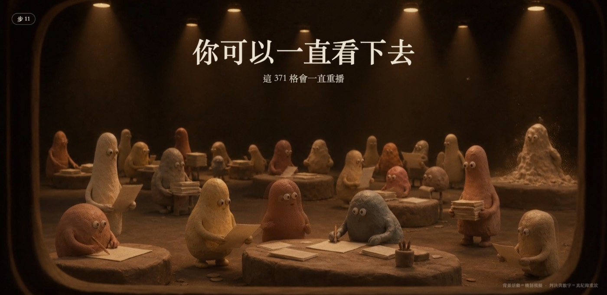

觀眾的分身接在哪裡——完整順序表 ＋ 每一句的畫面
narrative_order.json v4（2026-09-21）。14 個場景、26 拍。這張板子把表跟實截擺在一起——文字稿不算交付。
判準只有一條（CLAUDE.md）：「觀眾走到展場前面時，這件事有沒有差別」，不是「稽核員會不會問」。
✅ 全綠
0 接線（v3 最大的那個洞）
🔴 **v3 最大的那個洞：兩層文案寫完了，但 `index.html` 一行都沒載。**
`grep -c 'twinseam\.js' world3/index.html` ⇒ `0`（rc=1）。
照唯一判準（觀眾走到展場前面有沒有差別），那 12 拍當時的答案是**沒有**。
v4 把它接上去。接法：`</body>` 前三行（兩行 <script> ＋ 一對記號註解）。
**一行都不改 index.html 既有的內容**——所以還原＝刪那三行，sha256 回到原樣
（`--undo` 實測 byte 級相同）。
| 項目 | 值 |
|---|
| installer | Vacant repo：ops/exhibit/twin/narrative_wire_20260921/install_wire.py |
| 順序 | 🔴 seam_ending.js 必須在 twinseam.js **後面**——它包在 twinseam 的 `arrivals.update` 外面才讓得了位。installer 寫死這個順序。 |
| fail-closed | 少任何一支 .js ⇒ **一行都不寫**（exit 4）。掛一個 404 的 <script> ＝展場那天靜靜地少一層，而畫面上不會有任何一句話說出來。實測：把 seam_ending.js 移走再跑一次 ⇒ 「缺檔…（fail-closed，一行都沒寫）」。 |
| sha256 接線前 | 9afc3c1ba66c803442ce3d09badd86eed8f68e5563090133042a12d2d49f9abc |
| sha256 接線後 | c90eae8ecb44695b93fb6161d9c84de42285d03d303d6621430ebaefb001bf3e |
1 接線前 vs 接線後（同一頁、同一台瀏覽器，只差那三行）
s11 的句點
接線前：烤死字串（冷迴圈那一句）
從頁面上讀回來：大標「你可以一直看下去」／副標「這 371 格會一直重播」
來源 index.html(SCENES 烤死字串) twinseam=False seam_ending=False 幕 s11 檔 JPEG（1400 寬，有損；原始 PNG 的 sha256 在 shots_manifest.json）
接線後：幕 18
從頁面上讀回來：大標「他還在」／副標「剛剛那一位 還在這個畫面裡 下一位 請投卡」
來源 scenes/seam_ending.js twinseam=True seam_ending=True 幕 s11 檔 JPEG（1400 寬，有損；原始 PNG 的 sha256 在 shots_manifest.json）
s04 分身走進來
接線前：「那是你託付的需求」（對同時在場的另外 11 位是假話）

從頁面上讀回來：大標「世界多了一個人」／副標「那是你託付的需求」
來源 index.html(SCENES 烤死字串) twinseam=False seam_ending=False 幕 s04 檔 JPEG（1400 寬，有損；原始 PNG 的 sha256 在 shots_manifest.json）
接線後：指名
從頁面上讀回來：大標「鉛筆屑 走進來了」／副標「剛剛投進那個口的 就是他」
來源 twinseam.js twinseam=True seam_ending=True 幕 s04 檔 JPEG（1400 寬，有損；原始 PNG 的 sha256 在 shots_manifest.json）
2 一眼看完的順序
1 s00 待機 · 2 s01 掃碼 · 3 s02 開你的 AI · 4 s03 貼回來 送出
── 🔴 縫線起點就在這裡（觀眾按下送出那一刻）──
5 s03 收到了 {記號} · 6 s03 排隊（**下承諾**）
6′-a 正在成形 · 6′-b 比量過的久 · 6′-c 讀不到 · 6′-d 縮到角落 · 6′-e **退役儀式**（§5.1-7）· 6′-x 沒接來源
7′ s11 先看別人的（**界線**：這是別人的）· 7冷 s11 世界照常
8 s04 {記號} 走進來了（**兌現**）· 9 s05 他的目標 · 9b 配不到往事
10 s06 路由 · 11 s07 評審 · 12 s08 修訂 · 13 s09 稽核 · 14 s10/s12 揭曉
15 s13 收據（無訪客）· 16 s13 {記號} 拿到收據了
17 s11 退到人群裡 · 18 s11 他還在（**這一輪的句點**）· 19 → s00 交棒
3 逐拍：表 ＋ 畫面
1s00 引導輪播 [keep] 待機
你需要什麼？
走過 {N} 件真實任務的一群人
文案的家：index.html SCENES.s00
（沒有專屬截圖：引導輪播的頭一拍，沒改；它同時是幕 19 回來的那一張）
2s01 引導輪播 [keep] 掃碼
掃一下
用你自己的手機就好
文案的家：index.html SCENES.s01
（沒有專屬截圖：沒改）
3s02 引導輪播 [keep] 開你的 AI
打開你常用的 AI
提示詞 我們準備好了
文案的家：index.html SCENES.s02
（沒有專屬截圖：沒改）
4s03 引導輪播 [keep] 投遞
貼回來 送出
給多少 你自己決定
文案的家：index.html SCENES.s03
（沒有專屬截圖：沒改）
5s03 觀眾（縫線起點） [new] 信落進投遞口
收到了 {記號}
這個記號 跟你手機上那個一樣 你打的字不會上螢幕
第二句把隱私裁決演出來而不是寫在說明牌上；caption 只印 visitorLabel（代號＋造型類別）。
文案的家：twinseam.js T.arrived 觸發：WorldBridge.onSubmission → arrivals.arrive()（同步，不等輪詢／影片／模型）

從頁面上讀回來：大標「收到了 鉛筆屑」／副標「這個記號 跟你手機上那個一樣 你打的字不會上螢幕」
來源 twinseam.js twinseam=True seam_ending=True 幕 s03 檔 JPEG（1400 寬，有損；原始 PNG 的 sha256 在 shots_manifest.json）
6s03 觀眾 [new] 排隊
{記號} 排在第 {N} 位 ／ {記號} 接下來就是他
他在右下角那塊牌子上 一次演一位 輪到他就走進來
🔴 轉場的**前半**：這裡下承諾（「輪到他就走進來」）。
不講「幾分鐘」「正在生成」——生成是非同步而且住在手機那一端。只講畫面上看得到的兩件事。
文案的家：twinseam.js T.queued 觸發：抵達那 2.8 秒的優先權（arrivals.holdT）過了，而他還在陶牌上

從頁面上讀回來：大標「棉紗線 排在第 2 位」／副標「他在右下角那塊牌子上 一次演一位 輪到他就走進來」
來源 twinseam.js twinseam=True seam_ending=True 幕 s03 檔 JPEG（1400 寬，有損；原始 PNG 的 sha256 在 shots_manifest.json）
6′-as00／角落 觀眾（等待形狀） [keep（v3 漏記）] 他還在成形
{記號} 正在成形
已經 {時間} · 我們量過的是 16 到 54 秒
「16 到 54 秒」是**落盤證據**（n=7，1003 · gemma-4-12b-it-qat · 2026-09-20）。⚠ 派工單上那組「中位 312 秒、最長 727 秒」兩個 repo 都查不到出處 ⇒ 不准印在螢幕上。`TWIN_WAIT_OVERRIDE` 也拒絕覆寫 `obs*`：量出來的數字不給網址參數改，不然路過的人可以把它改成任何值。
文案的家：index.html waitCaption() 觸發：waitPhase(el) === 'forming'（< 108 秒）
（沒有專屬截圖：等待形狀那一條軌要真的等（forming 門檻 108 秒、退役 900 秒）；?waitdemo=1 演練得到，這一批沒拍）
6′-bs00／角落 觀眾（等待形狀） [keep（v3 漏記）] 比我們量過的最久還久
{記號} 正在成形
已經 {時間} · ⚠ 比我們量過的最久那次還久 · 他還在做，沒有卡住
改口的門檻是**實測最大值的兩倍**，不是一個好看的整數。後半句「他還在做，沒有卡住」是這一刻唯一能誠實說的話——我們知道他沒回來，不知道他卡住了沒。
文案的家：index.html waitCaption() 觸發：waitPhase(el) === 'long'（≥ 108 秒＝實測最大值的兩倍）
（沒有專屬截圖：同上）
6′-cs00／角落 觀眾（等待形狀） [keep（v3 漏記）] 讀不到他成形了沒
{記號} 正在成形
⚠ 我們讀不到他成形了沒 · 畫面不會自己變成完成
🔴 **「畫面不會自己變成完成」是這一句的重點。** 讀不到的時候，一個會自己補完的進度條就是在對觀眾說謊。成形曲線的上限 `ceil=0.93 < 1`（漸近、永遠不自己完成）是同一條規矩的碼。
文案的家：index.html waitCaption() 觸發：reach === false（輪詢打不到後端）
（沒有專屬截圖：同上（要把後端拔掉才觸發 reach=false））
6′-ds00（輪播拿回整格） 觀眾（等待形狀） [keep（v3 漏記）] 他縮到角落，畫面還給別人
（回到 s00 的大標）
waitSub()：「收到了，他還在後台」／「收到 {N} 張了，人還沒到齊——他們在後台」
展場現實：一個人等 15 分鐘，後面還有別人站在那裡。整格鎖住＝**所有人一起等他**，那反而是最焦慮的版本。42 秒蓋得住實測 16–54 秒那一段的絕大部分（大多數人根本不會看到角落那一版）。⚠ 這一句擋的是「對著一個已經投了卡的人說『等你投一張卡』」。
文案的家：index.html waitSub() + drawTitle 的 waitOv 分支 觸發：等待滿 TWIN_WAIT.centerS（42 秒）
（沒有專屬截圖：同上（42 秒））
6′-e回中央 觀眾（等待形狀 · 結束的形狀） [keep（v3 漏記）] 🔴 退役儀式（§5.1-7）
{記號} 今天沒有成形
他先回到土堆裡 · 帳本上留著「還沒成形」，沒有被丟掉也沒有被演成完成
🔴 **這是「給結束一個形狀」的另一半。** 演完的那一位退到人群裡（幕 17／18）；沒成形的這一位回到中央、沉回土堆。**兩條都不是靜靜消失。**
「沒有被丟掉也沒有被演成完成」兩句都指得出東西：帳本上那一筆留著（`還沒成形`），而成形度是**往回退**的動畫（`lv = formingLevel(retireAtS) × (1-k²)`），不是跳到 100% 再淡出。
文案的家：index.html waitCaption() + updateWait() 的退役分支 觸發：等待滿 TWIN_WAIT.retireS（900 秒）⇒ 'retiring'，演 ceremonyS（9 秒）
（沒有專屬截圖：同上（900 秒；?waitretire=<秒> 可現場調校））
6′-xs00 誠實邊界 [keep（v3 漏記）] 這一頁根本沒有接投卡來源
（s00 的大標）
這一頁沒有接投卡來源——不會有人走出來
離線／沒接雲端那一台也會被人站在前面看。與其讓他投了卡等一個永遠不會來的人，不如在螢幕上講出來。
文案的家：index.html waitSub() 觸發：director.waitAct === 'no_input'
（沒有專屬截圖：同上）
7s11 世界（別人的故事） [new] 等待中（他投完卡、還沒輪到他）
先看別人的
（剛好一位）{記號} 在右下角排隊 輪到他就走進來
（兩位以上）右下角排著 {N} 位 一次演一位 輪到誰就走進來
舊：你可以一直看下去／這 {N} 格會一直重播
🔴 **轉場的界線就是這一句。** 它把「這是別人的」明講出來，後面幕 8「{記號} 走進來了」才有東西可以對照。
「在右下角排隊」有東西可以指：waiting.length>0 的時候 arrivals 一定會畫那塊陶牌；
?arrive=0 關掉抵達層 ⇒ waiting 恆空 ⇒ 這一句自動不出現。
⚠ 兩位以上**不指名也不講位置**。第一版寫「{waiting[0]} 在右下角排隊 前面還有 {N-1} 位」，
實截打臉：waiting[0] 就是第 1 位，陶牌同一畫面寫「1 風鈴串 接下來就是他」，
大標卻說他前面還有 1 位——名字取第一位、數字取全部，同一個畫面自己打自己。
⚠ 也不寫「你的記號在右下角」：大螢幕前站著的不只投卡的人。
文案的家：scenes/seam_ending.js T.waiting 觸發：arrivals.waiting.length > 0 且場景是 s11
從頁面上讀回來：大標「先看別人的」／副標「風鈴串 在右下角排隊 輪到他就走進來」
來源 scenes/seam_ending.js twinseam=True seam_ending=True 幕 s11 檔 JPEG（1400 寬，有損；原始 PNG 的 sha256 在 shots_manifest.json）
另有 wired_b07w3_waiting＝兩位以上那一版
7冷s11 世界（沒有人在等） [keep] 世界照常
你可以一直看下去
這 {N} 格會一直重播
文案的家：index.html SCENES.s11 + loopSub()
從頁面上讀回來：大標「你可以一直看下去」／副標「這 371 格會一直重播」
來源 index.html(SCENES 烤死字串) twinseam=True seam_ending=False 幕 s11 檔 JPEG（1400 寬，有損；原始 PNG 的 sha256 在 shots_manifest.json）
＝把收尾層關掉那一張（冷句本來就長這樣）
8s04 觀眾 [change] 分身走進來
{記號} 走進來了
剛剛投進那個口的 就是他
舊：世界多了一個人／那是你託付的需求
🔴 轉場的**後半**：承諾在這裡兌現。整條縫線在這一幀閉合。
文案的家：twinseam.js T.enter（＋就地覆寫 SCENES.s04.sub） 觸發：director.startVisitor(spawnQueue.shift())
從頁面上讀回來：大標「鉛筆屑 走進來了」／副標「剛剛投進那個口的 就是他」
來源 twinseam.js twinseam=True seam_ending=True 幕 s04 檔 JPEG（1400 寬，有損；原始 PNG 的 sha256 在 shots_manifest.json）
9s05 觀眾 [change] 他的目標
他開始想要做什麼
{記號} 投的那件事 變成他的目標
舊：他開始想要做什麼／你的需求 變成他的目標
文案的家：twinseam.js T.goal（＋就地覆寫 SCENES.s05.sub）
從頁面上讀回來：大標「他開始想要做什麼」／副標「鉛筆屑 投的那件事 變成他的目標」
來源 twinseam.js twinseam=True seam_ending=True 幕 s05 檔 JPEG（1400 寬，有損；原始 PNG 的 sha256 在 shots_manifest.json）
9bs11 觀眾（分支：配不到往事） [new] 世界裡沒有夠像的往事
{記號} 先留下來走走
世界裡沒有夠像的往事——沒跑過就是沒跑過
文案的家：twinseam.js T.nomatch 觸發：visitor_goal → ambient 而且 director.visitorTask 是 null

從頁面上讀回來：大標「鉛筆屑 先留下來走走」／副標「世界裡沒有夠像的往事——沒跑過就是沒跑過」
來源 twinseam.js twinseam=True seam_ending=True 幕 s11 檔 JPEG（1400 寬，有損；原始 PNG 的 sha256 在 shots_manifest.json）
10s06 重放那一格（分身在畫面邊緣看） [keep] 路由
誰來做 不是用猜的
讓路徑決定誰向前
文案的家：index.html SCENES.s06 + beatTitle()
（沒有專屬截圖：沒改）
11s07 重放那一格 [keep] 同儕評審
三個同儕評審
判不通過 要拿得出反例
文案的家：index.html SCENES.s07 + beatTitle()
（沒有專屬截圖：沒改）
12s08 重放那一格 [keep] 修訂
被推翻就改
改完 再驗一次
文案的家：index.html SCENES.s08 + beatTitle()
（沒有專屬截圖：沒改）
13s09 重放那一格 [keep] 抽樣稽核
抽樣稽核
讓每一分信譽有根據
文案的家：index.html SCENES.s09
（沒有專屬截圖：沒改）
14s10 ／ s12 重放那一格 [keep] 揭曉（收下／擋下）
需求 等於 產出嗎 ／ 這一份沒有交出去
看起來完成 不等於符合需求 ／ 沒過驗收測資，就退回去重做
文案的家：index.html SCENES.s10 / SCENES.s12 + beatTitle()
（沒有專屬截圖：沒改）
15s13 收尾（無訪客那一條） [keep] 收據上鏈
每一步都留下收據
誰做的、驗了什麼、雜湊接著上一筆——你可以自己重驗
文案的家：index.html SCENES.s13 + startChain()
（沒有專屬截圖：沒改）
16s13 收尾（訪客那一條） [change] 他的收據
{記號} 拿到收據了
{chainBeatSub(task)}：有鏈頭就印鏈頭，沒有就照實說「這一批的資料裡沒有帶鏈頭」
舊：（判決大字）／這張收據正在送到你的手機——可以帶走、可以分享
文案的家：twinseam.js T.receiptA
從頁面上讀回來：大標「鉛筆屑 拿到收據了」／副標「這一批的資料裡沒有帶鏈頭 · 誰做的、驗了什麼、判了什麼，都在裡面——可以自己重跑」
來源 twinseam.js twinseam=True seam_ending=True 幕 s13 檔 JPEG（1400 寬，有損；原始 PNG 的 sha256 在 shots_manifest.json）
17s11 收尾（訪客那一條） [new] 退到人群裡
{記號} 退到人群裡了
找找看 他還在畫面上 下一位 請投卡
「結束要有形狀」的展場版本：不是消失，是退到人群裡——而這是 finishVisitor() 真的會做的事。
文案的家：twinseam.js T.receiptB 觸發：visitor_receipt 演完 → endReplay() 回 s11 的前 6 秒

從頁面上讀回來：大標「鉛筆屑 退到人群裡了」／副標「找找看 他還在畫面上 下一位 請投卡」
來源 twinseam.js twinseam=True seam_ending=True 幕 s11 檔 JPEG（1400 寬，有損；原始 PNG 的 sha256 在 shots_manifest.json）
18s11 收尾（這一輪的句點） [new] 他還在（熱迴圈，持續）
他還在 ／ 他們都還在
剛剛那一位 還在這個畫面裡 下一位 請投卡 ／ 走進來的 {N} 位 都還在這個畫面裡 下一位 請投卡
舊：你可以一直看下去／這 {N} 格會一直重播
「還在這個畫面裡」有碼可查：finishVisitor() 把分身 reserved=false; wander=true 放回 cast，
從來沒有任何一行把他從 cast 移除；endReplay() 回 s11 時 cast 全員 onstage=true。
頁面一重載 cast 重建、計數歸零 ⇒ 這一句自己也消失。計數與事實同生共死。
因此寫「走進來的 N 位」而不寫「今天」——沒有跨重載的帳。
文案的家：scenes/seam_ending.js T.loop 觸發：joined>=1（這一頁開著的期間，至少有一位走完整輪）且場景是 s11 且沒有別人在講話
從頁面上讀回來：大標「他還在」／副標「剛剛那一位 還在這個畫面裡 下一位 請投卡」
來源 scenes/seam_ending.js twinseam=True seam_ending=True 幕 s11 檔 JPEG（1400 寬，有損；原始 PNG 的 sha256 在 shots_manifest.json）
另有 wired_b18_many＝兩位以上那一版
19s11 → s00 交棒 [keep] 回到引導輪播（下一位）
文案的家：
（沒有專屬截圖：＝第 1 拍那一張（引導自己轉回來，沒有新的板））
4 補充：分支版本
幕 7′ 兩位以上

從頁面上讀回來：大標「先看別人的」／副標「右下角排著 3 位 一次演一位 輪到誰就走進來」
來源 scenes/seam_ending.js twinseam=True seam_ending=True 幕 s11 檔 JPEG（1400 寬，有損；原始 PNG 的 sha256 在 shots_manifest.json）
幕 18 兩位以上
從頁面上讀回來：大標「他們都還在」／副標「走進來的 3 位 都還在這個畫面裡 下一位 請投卡」
來源 scenes/seam_ending.js twinseam=True seam_ending=True 幕 s11 檔 JPEG（1400 寬，有損；原始 PNG 的 sha256 在 shots_manifest.json）
5 負控制：把它關掉，畫面看得出差別
三條開關各一張，接線後的同一頁、同一台瀏覽器，只差網址參數。字不一樣，就證明那兩層真的在承重，而不是剛好烤死字串長得一樣。
?seam=0
文案層不掛 ⇒ s04 回到烤死字串
從頁面上讀回來：大標「世界多了一個人」／副標「那是你託付的需求」
來源 index.html(SCENES 烤死字串) twinseam=False seam_ending=True 幕 s04 檔 JPEG（1400 寬，有損；原始 PNG 的 sha256 在 shots_manifest.json）
?seamend=0
收尾層不掛 ⇒ s11 回到「這 371 格會一直重播」
從頁面上讀回來：大標「你可以一直看下去」／副標「這 371 格會一直重播」
來源 index.html(SCENES 烤死字串) twinseam=True seam_ending=False 幕 s11 檔 JPEG（1400 寬，有損；原始 PNG 的 sha256 在 shots_manifest.json）
?arrive=0
抵達層關掉 ⇒ waiting 恆空 ⇒ 幕 7′ 不出現

從頁面上讀回來：大標「你可以一直看下去」／副標「這 371 格會一直重播」
來源 index.html(SCENES 烤死字串) twinseam=True seam_ending=True 幕 s11 檔 JPEG（1400 寬，有損；原始 PNG 的 sha256 在 shots_manifest.json）
6 這些圖是不是同一版頁面拍的
| base_sha256 | 張數 | 哪幾張 |
|---|
c90eae8ecb44695b93fb6161d9c84de42285d03d303d6621430ebaefb001bf3e | 17 張 | wired_b18_one、wired_b08_enter、wired_b05_arrived、wired_b06_queued、wired_b07w1_waiting、NEG_seamend0_s11、wired_b08_enter、wired_b09_goal、wired_b09b_nomatch、wired_b16_receiptA、wired_b17_receiptB、wired_b18_one、wired_b07w3_waiting、wired_b18_many、NEG_seam0_s04、NEG_seamend0_s11、NEG_arrive0_wait |
9afc3c1ba66c803442ce3d09badd86eed8f68e5563090133042a12d2d49f9abc | 2 張 | NEG_unwired_s11、NEG_unwired_s04 |
✅ 剛好兩版：接線前一版、接線後一版。這正是這張板子要對照的那兩版。
7 誠實邊界
板子綠只代表兩件事：這些字確實出現在畫面上、而且是同一版頁面拍的。
它**不代表**文案是對的——那要人看。
沒拍到的：等待形狀那一整條軌（幕 6′-a…6′-e、6′-x）。門檻是真的秒數
（forming 108 秒、讓格 42 秒、退役 900 秒），要 ?waitdemo=1 加參數演練。
**沒拍到就寫沒拍到**，不寫 0、也不用「理論上會出現」頂替。
這一批拍的是 127.0.0.1 上的一個獨立工作樹副本（跟展件本尊同一個 commit
＋那三行）。展件本尊 8420 那一台要不要跟著接，見報告。